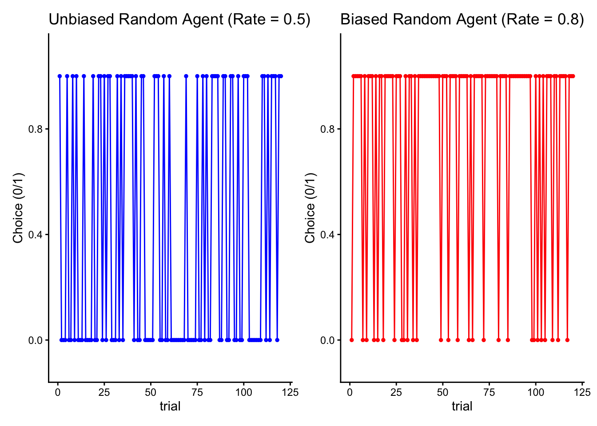

# Load necessary packages
# patchwork helps combine multiple plots
pacman::p_load(tidyverse, patchwork)
# Number of trials per simulation
trials <- 120
# Number of agents to simulate
agents <- 100
# Optional: Set random seed for reproducibility
# set.seed(123)4 From verbal descriptions to formal models
📍 Where we are in the Bayesian modeling workflow: We have verbal theories (Ch. 2). This chapter turns them into runnable code — forward models that generate data from parameters. This is a prerequisite for Ch. 4, where we reverse the direction: given observed data, we will infer the parameters. You cannot run that inversion without first knowing how to run the model forward.
In Chapter 1, we explored how the “physics” of a pizza stone—Newton’s Law of Cooling—could generate temperature data. We called this a generative model. In Chapter 2, you observed your own behavior in the Matching Pennies game and proposed verbal theories like “Win-Stay-Lose-Shift” or “Random Choice.”
Now, we bridge the gap. In this chapter, we will build “models of the mind.” We will translate the verbal strategies from Chapter 2 into precise algorithms—creating agents, or Synthetic Subjects.
Just as we used a formula to simulate the pizza stone heating up, we will write code to simulate a cognitive agent playing a game. If our code can generate choice data that looks like human data, we have a candidate model for how the mind works. If it cannot, our theory is wrong.
4.1 Learning Goals
This chapter focuses on translating the verbal theories from Chapter 2 into concrete, testable computational models. After completing this chapter, you will be able to:
- Formalize Verbal Models: Translate abstract strategy descriptions (like “Random Choice” or “Win-Stay-Lose-Shift”) into precise algorithms.
- Implement Agent-Based Simulations: Create simple software “agents” that execute these algorithms within a simulated environment (the Matching Pennies game).
- Run Virtual Experiments: Use simulation to see how different strategies perform against different opponents before we ever touch real data.
- Analyze Simulated Behavior: Generate and visualize simulation data to understand how different strategies perform and interact under controlled conditions.
- Prepare for Model Fitting: Appreciate why simulating models is a crucial step prior to estimating parameters from empirical data (covered in Chapter 4).
4.2 The Value of Formalization and Simulation
Verbal models are comfortable but dangerous. In Chapter 2, we might have said: “The agent stays after a win.”
But formalization forces us to answer uncomfortable questions, for instance:
The Persistence Question: If they win 10 times, do they stay forever? Or is there a limit?
The Error Question: Do they always stay, or do they sometimes press the wrong button by mistake?
The First Trial Question: What do they do before they have any feedback?
Writing code forces us to strip away ambiguity. It reveals hidden assumptions and forces us to be explicit about the mechanisms driving behavior. However, the value of this process extends beyond just clarity. Once formalized, we can create computational agents that act out the strategy. Simulation allows us to:
Understand Emergent Behavior: See the consequences of our model’s rules over many trials or interactions. Does the strategy lead to expected patterns? Are there surprising outcomes that weren’t obvious from the verbal description?
Explore Parameter Space: How does behavior change if we alter a model parameter (e.g., the bias in a random agent, or the stay probability in WSLS)?
Generate Testable Predictions: What specific behavioral patterns (e.g., choice sequences) does the model predict under different conditions? These predictions can then be compared to real data.
Debug Model Logic: Does the simulated behavior make sense? If not, it might indicate a flaw in our formalization of the verbal theory.
In this chapter, we will:
Formalize: Define precise algorithms for two key strategies (Random Choice and WSLS).
Implement: Code these algorithms as reusable R functions.
Simulate: Run these agents in a “Virtual Arena” against different opponents.
Scale: Simulate many agents to understand average behavior and visualize the results to compare strategy effectiveness.
4.3 Defining general conditions
4.4 Implementing a Random Agent
Our simplest model from Chapter 2 was the Random Choice agent. In cognitive science, this serves as our Null Hypothesis.
A Random Agent is not just “acting crazily”; it represents a specific, strong theoretical claim: The agent has no memory and no learning. It does not care about the past (history) or the future (planning). It only has a bias.
Algorithm: On every trial \(t\), independently of what happened at \(t-1\), choose ‘right’ (1) with probability \(\theta\) and ‘left’ (0) with probability \(1-\theta\).
Let’s implement this synthetic subject.
# --- Simulation Parameters ---
trials <- 120 # Number of trials for a single simulation run
# --- Basic Implementation ---
# Simulate an unbiased random agent (rate = 0.5)
rate_unbiased <- 0.5
choices_unbiased <- rbinom(trials, size = 1, prob = rate_unbiased)
# rbinom generates random draws from a binomial distribution.
# size = 1 makes it a Bernoulli trial (0 or 1 outcome).
# prob = rate specifies the probability of getting a 1.
# Simulate a biased random agent (rate = 0.8, chooses 'right' 80% of the time)
rate_biased <- 0.8
choices_biased <- rbinom(trials, size = 1, prob = rate_biased)
# --- Visualization 1: Raw Choices ---
# Create data frames for plotting
d_unbiased <- tibble(trial = 1:trials, choice = choices_unbiased, rate = rate_unbiased)
d_biased <- tibble(trial = 1:trials, choice = choices_biased, rate = rate_biased)
# Plot raw choice sequence (0s and 1s)
p1 <- ggplot(d_unbiased, aes(x = trial, y = choice)) +
geom_line(color = "blue") + geom_point(color = "blue", size = 1) +
labs(title = "Unbiased Random Agent (Rate = 0.5)", y = "Choice (0/1)") + theme_classic() + ylim(-0.1, 1.1)
p2 <- ggplot(d_biased, aes(x = trial, y = choice)) +
geom_line(color = "red") + geom_point(color = "red", size = 1) +
labs(title = "Biased Random Agent (Rate = 0.8)", y = "Choice (0/1)") + theme_classic() + ylim(-0.1, 1.1)
# Show plots side-by-side
print(p1 + p2 + plot_layout(guides = "collect"))
This first visualization shows the behavior of a purely random agent - one that chooses between options with equal probability (rate = 0.5). Looking at the jagged line jumping between 0 and 1, we can see that the agent’s choices appear truly random, with no discernible pattern. This represents what we might expect from a player who is deliberately trying to be unpredictable in the matching pennies game. However, this raw choice plot can be hard to interpret. A more informative way to look at the agent’s behavior is to examine how its average rate of choosing option 1 evolves over time:
# --- Visualization 2: Cumulative Rate ---
# Calculate the cumulative proportion of 'right' choices (1s)
d_unbiased <- d_unbiased %>% mutate(cumulative_rate = cumsum(choice) / row_number())
d_biased <- d_biased %>% mutate(cumulative_rate = cumsum(choice) / row_number())
# Combine data for comparison plot
d_combined <- bind_rows(d_unbiased, d_biased) %>%
mutate(Agent = paste("Rate =", rate))
# Plot cumulative rates
p3 <- ggplot(d_combined, aes(x = trial, y = cumulative_rate, color = Agent)) +
geom_line(size = 1) +
geom_hline(yintercept = 0.5, linetype = "dashed", color = "black") + # Reference line for 50%
ylim(0, 1) +
labs(
title = "Cumulative Choice Rate Over Time",
subtitle = "Shows convergence towards the agent's underlying bias",
x = "Trial Number",
y = "Cumulative Proportion of Choosing 'Right'",
color = "Agent Type"
) +
theme_classic()Warning: Using `size` aesthetic for lines was deprecated in ggplot2 3.4.0.
ℹ Please use `linewidth` instead.print(p3)
We can clearly see how bias affects choice behavior. The unbiased agent (rate = 0.5) stabilizes around choosing each option equally often, while the biased agent (rate = 0.8) shows a strong preference for option 1, choosing it approximately 80% of the time. This comparison helps us understand how we might detect biases in real players’ behavior - consistent deviation from 50-50 choice proportions could indicate an underlying preference or strategy.
4.4.1 Encapsulating the Agent in a Function
To make our agent reusable, we’ll wrap the logic in a function. This is good practice for building more complex simulations.
Note that the function is preceded by a number of commented lines. They are called Roxygen comments, a special documentation format used in R packages. By using these comments, we keep the code and its manual in the same place (and if you build a package, the format allows for automatically generating the help pages).
4.4.1.1 How to read it:
Description: The first lines describe what the function does.
(param?): Describes the inputs (arguments) the function expects (e.g., n_trials, rate).
(return?): Describes the output the function produces (e.g., a vector of 0s and 1s).
#' Random Agent Function
#'
#' Generates a sequence of choices based on a fixed probability (rate).
#' Includes optional noise causing random 50/50 choices.
#'
#' @param n_trials Integer, the number of choices to generate.
#' @param rate Numeric, the probability (0-1) of choosing option 1 ('right').
#' @param noise Numeric, the probability (0-1) of making a random 50/50 choice
#' instead of following the rate. Default is 0 (no noise).
#'
#' @return A numeric vector of choices (0s and 1s).
#'
RandomAgent_f <- function(n_trials, rate = 0.5, noise = 0) {
# Input validation
if (!is.numeric(rate) || rate < 0 || rate > 1) {
stop("Rate must be a probability between 0 and 1.")
}
if (!is.numeric(noise) || noise < 0 || noise > 1) {
stop("Noise must be a probability between 0 and 1.")
}
# Generate base choices according to the rate
choices <- rbinom(n_trials, size = 1, prob = rate)
# Apply noise: identify trials where noise occurs
noise_trials <- rbinom(n_trials, size = 1, prob = noise) == 1
# Replace choices with random 50/50 on noise trials
if (any(noise_trials)) {
choices[noise_trials] <- rbinom(sum(noise_trials), size = 1, prob = 0.5)
}
return(choices)
}
# Example usage:
example_choices <- RandomAgent_f(n_trials = 10, rate = 0.7, noise = 0.1)
print(paste("Example choices (rate=0.7, noise=0.1):", paste(example_choices, collapse = " ")))[1] "Example choices (rate=0.7, noise=0.1): 0 0 1 1 0 1 1 1 0 1"4.5 Implementing a Win-Stay-Lose-Shift (WSLS) Agent
The Random Agent was memoryless. The Win-Stay-Lose-Shift (WSLS) agent is our first step into strategic behavior: it reacts to the immediate past.
Algorithm:
Initialize: Make a random guess on the first trial.
Loop (Trial \(t > 1\)):
Check feedback from trial \(t-1\).
If Win: Repeat the previous choice.
If Loss: Switch to the opposite choice.
Noise (The “Trembling Hand”): With a small probability
noise, ignore the strategy and pick randomly. This accounts for attention lapses or motor errors (often called “trembling hand” in game theory).
4.5.1 Implementing the WSLS Function
Note on Programming: In R, we usually prefer vectorization (doing everything at once) over loops. However, many cognitive models are inherently sequential: what I do now depends on what I just saw. Therefore, we use an explicit if/else logic here to mirror the cognitive process.
#' Win-Stay-Lose-Shift Agent Function
#'
#' Determines the next choice based on the previous choice and its outcome (feedback).
#' Includes optional noise.
#'
#' @param prevChoice Numeric, the agent's choice on the previous trial (0 or 1).
#' @param feedback Numeric, the outcome of the previous trial (1 for win, 0 for loss).
#' @param noise Numeric, the probability (0-1) of making a random 50/50 choice. Default is 0.
#'
#' @return Numeric, the agent's next choice (0 or 1).
#'
WSLSAgent_f <- function(prevChoice, feedback, noise = 0) {
# Input validation
if (!prevChoice %in% c(0, 1)) stop("Previous choice must be 0 or 1.")
if (!feedback %in% c(0, 1)) stop("Feedback must be 0 or 1.")
if (!is.numeric(noise) || noise < 0 || noise > 1) stop("Noise must be a probability between 0 and 1.")
# Core WSLS logic:
# If feedback is 1 (win), stay: choice = prevChoice
# If feedback is 0 (loss), shift: choice = 1 - prevChoice
choice <- ifelse(feedback == 1, prevChoice, 1 - prevChoice)
# Apply noise if specified
if (noise > 0 && runif(1) < noise) {
# Override with a random 50/50 choice
choice <- sample(c(0, 1), 1)
}
return(choice)
}
# Example usage:
# Won previous trial (feedback=1) after choosing 1:
print(paste("Next choice after win (chose 1):", WSLSAgent_f(prevChoice = 1, feedback = 1)))[1] "Next choice after win (chose 1): 1"# Lost previous trial (feedback=0) after choosing 1:
print(paste("Next choice after loss (chose 1):", WSLSAgent_f(prevChoice = 1, feedback = 0)))[1] "Next choice after loss (chose 1): 0"4.5.2 Simulating WSLS vs. Opponents
Now, let’s simulate our WSLS agent playing against different opponents to see how it performs.
# --- Simulation Setup ---
trials <- 120
# --- Simulation 1: WSLS vs. Biased Random Agent ---
cat("Simulating WSLS vs. Biased Random (Rate = 0.8)...\n")Simulating WSLS vs. Biased Random (Rate = 0.8)...# Opponent always chooses 'right' with 80% probability
opponent_choices_biased <- RandomAgent_f(n_trials = trials, rate = 0.8, noise = 0)
# Initialize vectors for WSLS agent
wsls_choices_vs_biased <- rep(NA, trials)
feedback_vs_biased <- rep(NA, trials)
# First choice is random
wsls_choices_vs_biased[1] <- sample(c(0, 1), 1)
# Simulation loop
for (t in 2:trials) {
# Determine feedback from previous trial (WSLS wins if choices match opponent)
# Note: In Matching Pennies, win condition depends on role (Matcher/Hider).
# Here we assume the WSLS agent is the 'Matcher' for simplicity.
prev_feedback <- ifelse(wsls_choices_vs_biased[t - 1] == opponent_choices_biased[t - 1], 1, 0)
feedback_vs_biased[t - 1] <- prev_feedback # Store feedback for analysis
# WSLS agent makes choice based on previous feedback
wsls_choices_vs_biased[t] <- WSLSAgent_f(
prevChoice = wsls_choices_vs_biased[t - 1],
feedback = prev_feedback,
noise = 0 # Assuming no noise for this simulation
)
}
# Record feedback for the last trial
feedback_vs_biased[trials] <- ifelse(wsls_choices_vs_biased[trials] == opponent_choices_biased[trials], 1, 0)
# Create dataframe for analysis
df_vs_biased <- tibble(
trial = 1:trials,
Self_WSLS = wsls_choices_vs_biased,
Opponent_Random = opponent_choices_biased,
Feedback = feedback_vs_biased # 1 if WSLS won
) %>% mutate(
Cumulative_Performance = cumsum(Feedback) / row_number()
)
# --- Simulation 2: WSLS vs. WSLS ---
# (Opponent plays WSLS but tries to mismatch - feedback is inverted)
cat("Simulating WSLS vs. WSLS...\n")Simulating WSLS vs. WSLS...wsls1_choices <- rep(NA, trials)
wsls2_choices <- rep(NA, trials)
feedback_wsls1 <- rep(NA, trials) # Feedback for agent 1
wsls1_choices[1] <- sample(c(0, 1), 1)
wsls2_choices[1] <- sample(c(0, 1), 1)
for (t in 2:trials) {
# Feedback for agent 1 from previous trial (wins if match)
prev_feedback1 <- ifelse(wsls1_choices[t - 1] == wsls2_choices[t - 1], 1, 0)
feedback_wsls1[t - 1] <- prev_feedback1
# Feedback for agent 2 (opponent) is the opposite (wins if mismatch)
prev_feedback2 <- 1 - prev_feedback1
# Both agents choose based on their own previous feedback
wsls1_choices[t] <- WSLSAgent_f(wsls1_choices[t - 1], prev_feedback1, noise = 0)
wsls2_choices[t] <- WSLSAgent_f(wsls2_choices[t - 1], prev_feedback2, noise = 0)
}
feedback_wsls1[trials] <- ifelse(wsls1_choices[trials] == wsls2_choices[trials], 1, 0)
# Create dataframe
df_vs_wsls <- tibble(
trial = 1:trials,
Self_WSLS = wsls1_choices,
Opponent_WSLS = wsls2_choices,
Feedback = feedback_wsls1 # 1 if Self_WSLS won
) %>% mutate(
Cumulative_Performance = cumsum(Feedback) / row_number()
)
# --- Visualize Simulation Results ---
# Plot choices over time
p_choices_biased <- ggplot(df_vs_biased, aes(x = trial)) +
geom_line(aes(y = Self_WSLS, color = "WSLS Agent")) +
geom_line(aes(y = Opponent_Random + 0.05, color = "Biased Opponent"), linetype = "dashed") + # Offset slightly
labs(title = "WSLS vs. Biased Random", y = "Choice (0/1)") + theme_classic() + ylim(-0.1, 1.1)
p_choices_wsls <- ggplot(df_vs_wsls, aes(x = trial)) +
geom_line(aes(y = Self_WSLS, color = "WSLS Agent 1")) +
geom_line(aes(y = Opponent_WSLS + 0.05, color = "WSLS Agent 2"), linetype = "dashed") + # Offset slightly
labs(title = "WSLS vs. WSLS", y = "Choice (0/1)") + theme_classic() + ylim(-0.1, 1.1)
# Plot cumulative performance
p_perf_biased <- ggplot(df_vs_biased, aes(x = trial, y = Cumulative_Performance)) +
geom_line(color = "blue", size = 1) + geom_hline(yintercept = 0.5, linetype = "dashed") +
labs(title = "WSLS Performance vs. Biased Random", y = "Proportion Wins") + theme_classic() + ylim(0, 1)
p_perf_wsls <- ggplot(df_vs_wsls, aes(x = trial, y = Cumulative_Performance)) +
geom_line(color = "purple", size = 1) + geom_hline(yintercept = 0.5, linetype = "dashed") +
labs(title = "WSLS Performance vs. WSLS", y = "Proportion Wins") + theme_classic() + ylim(0, 1)
# Arrange plots
(p_choices_biased | p_choices_wsls) / (p_perf_biased | p_perf_wsls) +
plot_layout(guides = "collect") & theme(legend.position = "bottom")
This cumulative performance plot reveals the overall effectiveness of the WSLS strategy. By tracking the running average of successes, we can see whether the strategy leads to above-chance performance in the long run. When playing against a biased random opponent, the WSLS agent can potentially exploit the opponent’s predictable tendencies, though success depends on how strong and consistent the opponent’s bias is. When we pit the WSLS agent against another WSLS agent, the dynamics become more complex. Both agents are now trying to adapt to each other’s adaptations, creating a more sophisticated strategic interaction. The resulting behavior often shows interesting patterns of mutual adaptation, where each agent’s attempts to exploit the other’s strategy leads to evolving patterns of play.
4.6 Scaling Up: The Virtual Experiment
Now that we have our agents defined as functions, we can run virtual Experiments, to better understand our models.
We will build a “Simulation Engine” function that:
Takes two agents (e.g., WSLS vs. Random).
Makes them play for
Ntrials.Records every move.
To understand the average behavior and robustness of the WSLS strategy, we need to simulate many agents playing against opponents with varying biases.
Why run a virtual experiment instead of just testing one agent? A single simulation is like flipping a coin once — you cannot tell if the coin is fair from one flip. Running 100 simulated agents lets us separate the signal (the model’s actual tendency) from the noise (random variation in any one run). It also lets us sweep across parameter values (e.g., varying opponent bias from 0.5 to 1.0) to understand when WSLS works and when it fails — building intuition before we ever see real human data.
First, let’s create a function that runs one simulation (one WSLS agent vs. one opponent) and returns the results. This avoids repeating code.
#' Run Matching Pennies Simulation
#'
#' Simulates a full game between an Agent (Subject) and an Opponent.
#'
#' @param n_trials Integer, number of trials.
#' @param agent_strategy String, "WSLS" or "Random".
#' @param agent_params List, parameters for the agent (e.g., list(noise=0.1)).
#' @param opponent_strategy String, "WSLS" or "Random".
#' @param opponent_params List, parameters for the opponent (e.g., list(rate=0.8)).
#'
#' @return A tibble with trial-by-trial choices and outcomes.
#'
run_simulation <- function(n_trials, agent_strategy, agent_params, opponent_strategy, opponent_params) {
# Pre-allocate vectors for speed
agent_choices <- rep(NA, n_trials)
opponent_choices <- rep(NA, n_trials)
agent_feedback <- rep(NA, n_trials)
# --- Trial 1 (Initialization) ---
# Agents behave randomly or use a specific start bias on trial 1
agent_choices[1] <- rbinom(1, 1, 0.5)
opponent_choices[1] <- rbinom(1, 1, 0.5)
# Check winner (Assuming Agent is Matcher: Win if choices match)
agent_feedback[1] <- ifelse(agent_choices[1] == opponent_choices[1], 1, 0)
# --- Loop through Game ---
for (t in 2:n_trials) {
# 1. Agent makes a choice based on history (t-1)
if (agent_strategy == "WSLS") {
agent_choices[t] <- WSLSAgent_f(agent_choices[t-1], agent_feedback[t-1], agent_params$noise)
} else if (agent_strategy == "Random") {
agent_choices[t] <- RandomAgent_f(1, agent_params$rate, agent_params$noise)
}
# 2. Opponent makes a choice
if (opponent_strategy == "Random") {
opponent_choices[t] <- RandomAgent_f(1, opponent_params$rate, opponent_params$noise)
} else if (opponent_strategy == "WSLS") {
# Opponent is Hider: They win if choices MISMATCH.
# So their feedback is the opposite of the Agent's feedback.
op_feedback <- 1 - agent_feedback[t-1]
opponent_choices[t] <- WSLSAgent_f(opponent_choices[t-1], op_feedback, opponent_params$noise)
}
# 3. Determine Outcome
agent_feedback[t] <- ifelse(agent_choices[t] == opponent_choices[t], 1, 0)
}
# Return data
return(tibble(
trial = 1:n_trials,
choice = agent_choices,
opponent = opponent_choices,
win = agent_feedback
))
}
# --- Running Scaled Simulations ---
cat("Running scaled simulations...\n")Running scaled simulations...# Default WSLS parameters (Only 'noise' is used by our simple WSLS agent)
wsls_params_default <- list(noise = 0)
# Simulation 1: WSLS vs. Random agents with varying biases
opponent_rates <- seq(from = 0.5, to = 1, by = 0.05)
results_vs_random <- list()
for (rate in opponent_rates) {
# Create a list to store runs for this specific rate
rate_runs <- list()
for (agent_i in 1:agents) {
opponent_params_rand <- list(rate = rate, noise = 0)
# CORRECTED CALL: Added "WSLS" as the second argument
sim_run <- run_simulation(trials, "WSLS", wsls_params_default, "Random", opponent_params_rand)
sim_run$agent <- agent_i
sim_run$opponent_rate <- rate
rate_runs[[agent_i]] <- sim_run
}
# Combine all agents for this rate and store in main list
results_vs_random[[as.character(rate)]] <- bind_rows(rate_runs)
}
# Combine everything into one big dataframe
df_scaled_vs_random <- bind_rows(results_vs_random)4.6.1 Visualizing Results
Now let’s visualize the average performance of the WSLS agent against random opponents with different biases.
# Calculate cumulative performance for each simulation run
df_scaled_vs_random <- df_scaled_vs_random %>%
group_by(agent, opponent_rate) %>%
# CHANGED 'Feedback' to 'win' here:
mutate(Cumulative_Performance = cumsum(win) / row_number()) %>%
ungroup()
# Plot average performance over time, grouped by opponent bias rate
p_scaled_perf <- ggplot(df_scaled_vs_random,
aes(x = trial, y = Cumulative_Performance,
group = opponent_rate, color = as.factor(opponent_rate))) + # made color a factor for cleaner legend
stat_summary(fun = mean, geom = "line", size = 1) +
geom_hline(yintercept = 0.5, linetype = "dashed") +
scale_color_viridis_d() + # Discrete scale since we made rate a factor
labs(
title = "Average WSLS Performance vs. Random Opponents",
subtitle = "Performance improves as opponent's bias increases",
x = "Trial Number",
y = "Average Proportion Wins",
color = "Opponent Bias"
) +
ylim(0, 1) +
theme_classic()
print(p_scaled_perf)
This plot clearly shows that the WSLS strategy becomes more effective (higher average win rate) as the opponent becomes more predictable (i.e., their bias rate moves further away from 0.5 towards 1.0). Against a purely random opponent (rate=0.5), WSLS performs at chance level on average. This highlights WSLS’s ability to exploit predictability.
4.7 Conclusion: The Forward Model
In this chapter, we successfully built a Forward Model. * We started with a verbal theory (WSLS). * We translated it into code (parameters + algorithm). * We ran the code to generate artificial data.
This is the “models of the Mind” in action. We demonstrated that a simple mechanism (Win-Stay-Lose-Shift) can generate complex success rates depending on the environment (the opponent).
4.7.1 The Problem of Inference
However, in real science, we don’t start with the parameters. We start with the data (the choices participants made) and we want to find the parameters (did they use WSLS? How much noise?).
We need to run our machine in reverse.
Forward (Simulation): Parameters \(\rightarrow\) Data
Inverse (Fitting): Data \(\rightarrow\) Parameters
Coming up in Chapter 4: We reverse the arrow. The simulated data we just created — sequences of choices generated by agents with known parameters — become our test cases. We will learn to infer those parameters back from the choices using Bayesian inference in Stan. This single-dataset fit is the foundation; in Chapter 5, we will then stress-test the entire inference procedure (prior predictive checks, parameter recovery, SBC, posterior predictive checks) before the model is allowed anywhere near real human data.